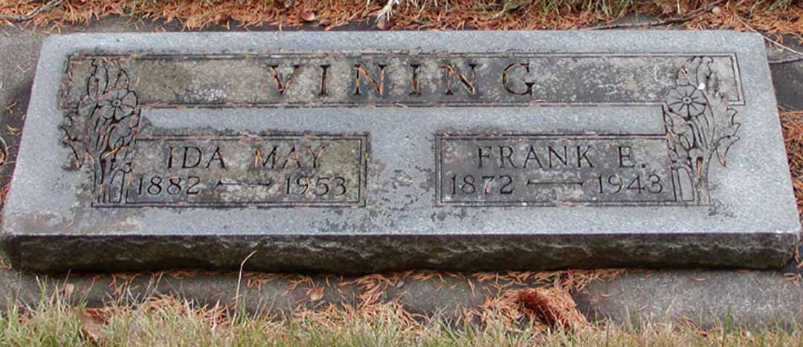

Census Data
| 1910 | 1920 | 1930 | 1940 | |
| Frank Ernest Vining | 38 | 47 | 57 | 67 |
| Ida May (Inman) Vining | 28 | 37 | 47 | 57 |
| Craig E. Vining | 6 | 15 | married and living in separate household | |
| Ned Ansel Vining | 8 | 18 | married and living in separate household |


Death Data
Headstone for Frank Ernest Vining and Ida May (Inman) Vining, in Waitsburg Cemetery, Waitsburg, Walla Walla County, Washington: